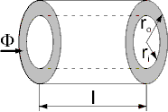
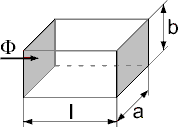

Please have a look at Reluctance forces in the Users Guide for an explanation of the different flux tube categories and resulting sub-packages.
Flux tube elements with generation of a reluctance force are intended for modelling of position-dependent air gap sections and permanent magnet sections respectively of translatory actuators. By default, the position co-ordinate of the mechanical connector flange.s is identical with the dimension l of the package's flux tube elements. l is the dimension changes with armature motion. If needed, the identity l=flange.s can be replaced by an actuator-specific equation, for example, when a flux tube length increases with decreasing armature position. The position co-ordinate of an element's translatory connector flange.s in turn will be identical with the armature position x in most cases, as the examples illustrate.The derivative of each element's permeance with respect to armature position dGmBydx is calculated from the derivative of the flux tube's permeance with respect to its varying dimension dGmBydl and the derivative of this dimension with respect to armature position dlBydx:
dGm dGm dl
--- = --- * --
dx dl dx
The parameter dlBydx must be set in each flux tube element to +1 or -1 according to the definition of the armature co-ordinate and the position of the element in a device's magnetic circuit. Proper match between armature motion and resulting variation of the flux tube length assures that the element's reluctance force acts in the right direction.
The shapes of the flux tubes defined in this package are rather simple. Only one dimenion varies with armature motion. Flux tubes with more complex variations of dimensions with armature motion can be defined by extending the base class PartialForce, if needed. Determination of the analytic derivative dGmBydl could become more complex for those flux tubes.
| Name | Description |
|---|---|
| PartialForce | Base class for flux tubes with reluctance force generation; constant permeability |
| HollowCylinderAxialFlux | (Hollow) cylinder with axial flux; constant permeability |
| HollowCylinderRadialFlux | Hollow cylinder with radial flux; constant permeability |
| CuboidParallelFlux | Cuboid with flux in direction of motion, e.g. air gap with rectangular cross-section; constant permeability |
| CuboidOrthogonalFlux | Cuboid with flux orthogonal to direction of motion; constant permeability |
| LeakageAroundPoles | Leakage flux tube around cylindrical or prismatic poles |
Please refer to the description of the enclosing sub-package Force for a description of all elements of this package.
| Type | Name | Default | Description |
|---|---|---|---|
| RelativePermeability | my_r | 1 | Relative magnetic permeability [1] |
| Integer | dlBydx | 1 | Derivative of flux tube's varying dimension with respect to armature position; set to +1 or -1 |
| Type | Name | Description |
|---|---|---|
| PositiveMagneticPort | p | Positive magnetic port |
| NegativeMagneticPort | n | Negative magnetic port |
| Flange_b | flange | Generated reluctance force at armature position |
partial model PartialForce
"Base class for flux tubes with reluctance force generation; constant permeability"
extends Modelica_Magnetic.Interfaces.TwoPortComponent;
parameter SI.RelativePermeability my_r = 1 "Relative magnetic permeability";
SI.Force F_m "Reluctance force";
SI.Reluctance R_m "Magnetic reluctance";
SI.Permeance G_m "Magnetic permeance";
Real dGmBydx "Derivative of permeance with respect to armature position";
parameter Integer dlBydx = 1
"Derivative of flux tube's varying dimension with respect to armature position; set to +1 or -1";
Modelica.Mechanics.Translational.Interfaces.Flange_b flange
"Generated reluctance force at armature position";
equation
V_mag = Phi * R_m;
flange.f = -F_m;
R_m = 1/G_m;
F_m = 0.5 * V_mag^2 * dGmBydx;
end PartialForce;
Please refer to the description of the enclosing sub-package Force for a description of all elements of this package.
| Type | Name | Default | Description |
|---|---|---|---|
| RelativePermeability | my_r | 1 | Relative magnetic permeability [1] |
| Integer | dlBydx | 1 | Derivative of flux tube's varying dimension with respect to armature position; set to +1 or -1 |
| Radius | r_i | 0 | Inner radius of (hollow) cylinder [m] |
| Radius | r_o | 0.01 | Outer radius of (hollow) cylinder [m] |
| Variable geometry | |||
| Length | l | flange.s | Axial length (in direction of flux) [m] |
|  | |||
| Type | Name | Description |
|---|---|---|
| PositiveMagneticPort | p | Positive magnetic port |
| NegativeMagneticPort | n | Negative magnetic port |
| Flange_b | flange | Generated reluctance force at armature position |
model HollowCylinderAxialFlux
"(Hollow) cylinder with axial flux; constant permeability"
extends Modelica_Magnetic.FluxTube.Force.PartialForce;
SI.Length l = flange.s "Axial length (in direction of flux)";
parameter SI.Radius r_i = 0 "Inner radius of (hollow) cylinder";
parameter SI.Radius r_o = 0.01 "Outer radius of (hollow) cylinder";
SI.MagneticFluxDensity B "Homogeneous flux density";
protected
parameter SI.Area A = pi*(r_o^2 - r_i^2)
"Cross-sectional area orthogonal to direction of flux";
equation
G_m = my_0*my_r * A /l;
dGmBydx = -1 * my_0*my_r * A /l^2 * dlBydx;
B = Phi/A;
end HollowCylinderAxialFlux;
Please refer to the description of the enclosing sub-package Force for a description of all elements of this package.
| Type | Name | Default | Description |
|---|---|---|---|
| RelativePermeability | my_r | 1 | Relative magnetic permeability [1] |
| Integer | dlBydx | 1 | Derivative of flux tube's varying dimension with respect to armature position; set to +1 or -1 |
| Radius | r_i | 0.01 | Inner radius of hollow cylinder [m] |
| Radius | r_o | 0.015 | Outer radius of hollow cylinder [m] |
| Variable geometry | |||
| Length | l | flange.s | Axial length (orthogonal to direction of flux) [m] |
| Type | Name | Description |
|---|---|---|
| PositiveMagneticPort | p | Positive magnetic port |
| NegativeMagneticPort | n | Negative magnetic port |
| Flange_b | flange | Generated reluctance force at armature position |
model HollowCylinderRadialFlux
"Hollow cylinder with radial flux; constant permeability"
extends Modelica_Magnetic.FluxTube.Force.PartialForce;
SI.Length l = flange.s "Axial length (orthogonal to direction of flux)";
parameter SI.Radius r_i = 0.01 "Inner radius of hollow cylinder";
parameter SI.Radius r_o = 0.015 "Outer radius of hollow cylinder";
SI.MagneticFluxDensity B_avg
"Average flux density (at arithmetic mean radius)";
protected
SI.Area A_avg
"Average cross-sectional area orthogonal to direction of flux (at arithmetic mean radius)";
equation
G_m = my_0*my_r * 2 * pi * l /Modelica.Math.log(r_o/r_i);
dGmBydx = my_0*my_r * 2 * pi/Modelica.Math.log(r_o/r_i) * dlBydx;
A_avg = pi*(r_i + r_o) * l;
B_avg = Phi/A_avg;
end HollowCylinderRadialFlux;
Please refer to the description of the enclosing sub-package Force for a description of all elements of this package.
| Type | Name | Default | Description |
|---|---|---|---|
| RelativePermeability | my_r | 1 | Relative magnetic permeability [1] |
| Integer | dlBydx | 1 | Derivative of flux tube's varying dimension with respect to armature position; set to +1 or -1 |
| Breadth | a | 0.01 | Breadth of rectangular cross-section [m] |
| Height | b | 0.01 | Height of rectangular cross-section [m] |
| Variable geometry | |||
| Length | l | flange.s | Axial length (in direction of flux) [m] |
|  | |||
| Type | Name | Description |
|---|---|---|
| PositiveMagneticPort | p | Positive magnetic port |
| NegativeMagneticPort | n | Negative magnetic port |
| Flange_b | flange | Generated reluctance force at armature position |
model CuboidParallelFlux
"Cuboid with flux in direction of motion, e.g. air gap with rectangular cross-section; constant permeability"
extends Modelica_Magnetic.FluxTube.Force.PartialForce;
SI.Length l = flange.s "Axial length (in direction of flux)";
parameter SI.Breadth a = 0.01 "Breadth of rectangular cross-section";
parameter SI.Height b = 0.01 "Height of rectangular cross-section";
SI.MagneticFluxDensity B "Homogeneous flux density";
protected
parameter SI.Area A = a*b
"Cross-sectional area orthogonal to direction of flux";
equation
G_m = my_0*my_r * A /l;
dGmBydx = -1 * my_0*my_r * A /l^2 * dlBydx;
B = Phi/A;
end CuboidParallelFlux;
Please refer to the description of the enclosing sub-package Force for a description of all elements of this package.
| Type | Name | Default | Description |
|---|---|---|---|
| RelativePermeability | my_r | 1 | Relative magnetic permeability [1] |
| Integer | dlBydx | 1 | Derivative of flux tube's varying dimension with respect to armature position; set to +1 or -1 |
| Breadth | a | 0.01 | Breadth of rectangular cross-section [m] |
| Height | b | 0.01 | Height of rectangular cross-section [m] |
| Variable geometry | |||
| Length | l | flange.s | Axial length (in direction of motion, orthogonal to flux) [m] |
| Type | Name | Description |
|---|---|---|
| PositiveMagneticPort | p | Positive magnetic port |
| NegativeMagneticPort | n | Negative magnetic port |
| Flange_b | flange | Generated reluctance force at armature position |
model CuboidOrthogonalFlux
"Cuboid with flux orthogonal to direction of motion; constant permeability"
extends Modelica_Magnetic.FluxTube.Force.PartialForce;
SI.Length l = flange.s
"Axial length (in direction of motion, orthogonal to flux)";
parameter SI.Breadth a = 0.01 "Breadth of rectangular cross-section";
parameter SI.Height b = 0.01 "Height of rectangular cross-section";
SI.MagneticFluxDensity B "Homogeneous flux density";
protected
SI.Area A "Cross-sectional area orthogonal to direction of flux";
equation
A = a*l;
G_m = my_0*my_r * A /b;
dGmBydx = my_0*my_r * a /b * dlBydx;
B = Phi/A;
end CuboidOrthogonalFlux;
Please refer to the description of the enclosing sub-package Force for a description of all elements of this package.
Leakage flux around a prismatic or cylindric air gap between to poles can be described with this model. Due to its constant radius of the leakage field r_leak, the model is rather simple. Whereas in reality the leakage radius is approximately constant for air gap lengths l greater than this radius, it decreases with air gap lengths less than the leakage radius. This decrease for small air gaps is neglected here, since the influence of the leakage flux tube compared to that of the enclosed main air gap (connected in parallel) decreases for decreasing air gap length l.
| Type | Name | Default | Description |
|---|---|---|---|
| RelativePermeability | my_r | 1 | Relative magnetic permeability [1] |
| Integer | dlBydx | 1 | Derivative of flux tube's varying dimension with respect to armature position; set to +1 or -1 |
| Length | t | 0.1 | Depth orthogonal to flux; mean circumference of flux tube in case of cylindrical poles [m] |
| Radius | r_leak | 0.01 | Radius of leakage field [m] |
| Variable geometry | |||
| Length | l | flange.s | Axial length (in direction of flux) [m] |
| Type | Name | Description |
|---|---|---|
| PositiveMagneticPort | p | Positive magnetic port |
| NegativeMagneticPort | n | Negative magnetic port |
| Flange_b | flange | Generated reluctance force at armature position |
model LeakageAroundPoles
"Leakage flux tube around cylindrical or prismatic poles"
extends Modelica_Magnetic.FluxTube.Force.PartialForce;
SI.Length l = flange.s "Axial length (in direction of flux)";
parameter SI.Length t = 0.1
"Depth orthogonal to flux; mean circumference of flux tube in case of cylindrical poles";
parameter SI.Radius r_leak = 0.01 "Radius of leakage field";
equation
G_m = 2 * my_0 * t /pi * Modelica.Math.log(1 + pi/2 * r_leak/l);
//derivative at full length:
// dGmBydx = 2 * my_0 * t /pi * 1/(1 + pi/2 * r_leak/l) * (-1)*pi/2*r_leak/l^2 * dlBydx;
//simplified:
dGmBydx = - my_0 * t * r_leak * dlBydx / (l^2 *(1 + pi/2 * r_leak/l));
end LeakageAroundPoles;